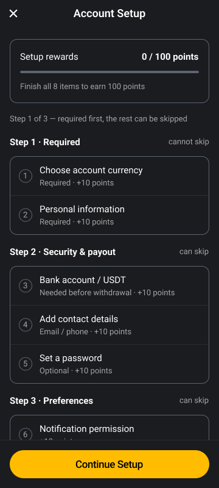
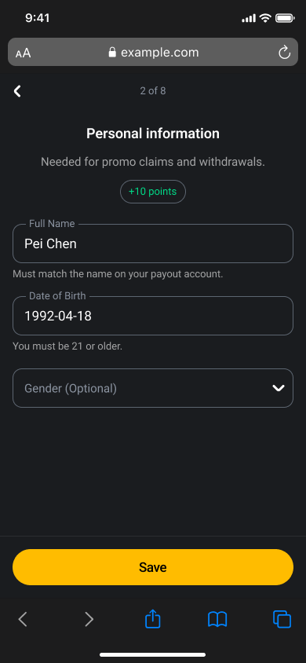
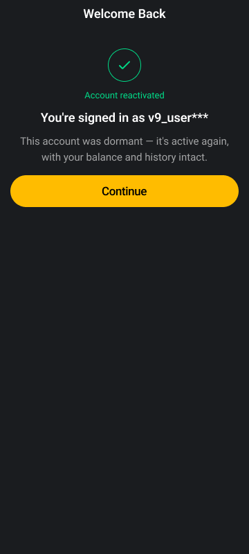
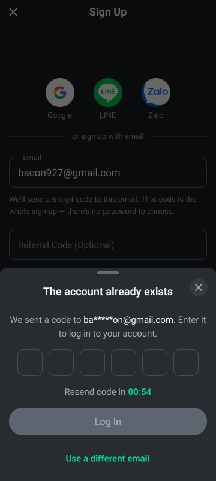
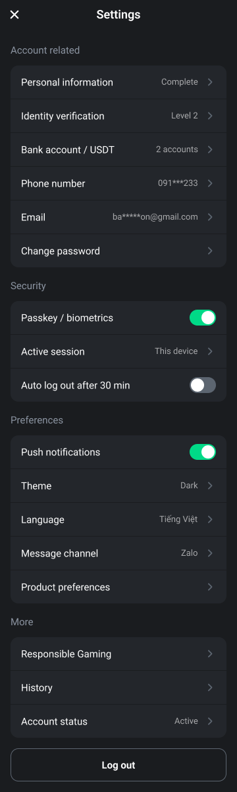
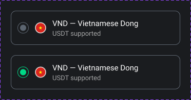
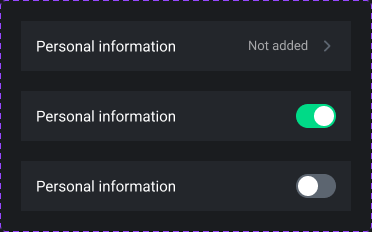
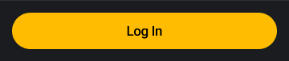
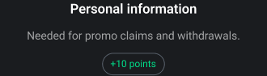
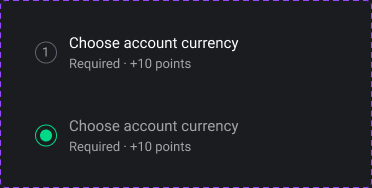

短頁：按鈕跟在表單後面
內容一屏放得下的頁面（Login、Sign Up、選幣別）。
- 主按鈕緊接在最後一個欄位後面，不釘底。
- 按鈕下面一行連結列，帶去相關的另一頁。
Mobile web 的畫面怎麼做。這一版是現有產品（APP-V9Bet-v1）的升級：保留 V9Bet 讓人認得的樣子，可用性和一致性照這份規範。設計稿在 Figma V9Bet Mobile Web — UI，實作是 Tailwind CSS 的元件 class。元件一節的範例是真的元件 class；設定、引導與面板那一節放的是 Figma 的圖，可以操作的範例和寫法在 UI kit。
.btn、.field、.tab…），頁面用 utilities 排版，不在頁面裡重新刻一顆。variables.css；tailwind.config.js 把它們變成 theme 和元件。頁面裡不寫色碼。| 變數 / class | 值 | 用在哪 | |
|---|---|---|---|
bg-app | #1A1C1F | 頁面底色 | |
bg-card | #23262B | 卡片、設定清單（第一層） | |
bg-sheet | #282C31 | 從底部上來的面板（第二層），後面一層 60% 黑 | |
text-ink | #FFFFFF | 標題、輸入的值、主要文字 | |
text-ink-secondary | 白 60% | 說明文字 | |
text-ink-muted | #8A93A0 | 欄位標籤、提示、分組標題。在深色底上過 4.5:1 | |
border-edge | #5C6570 | 外框、圖示、沒選中的圈。不拿來當文字，太暗 | |
bg-disabled · text-disabled-ink | #5C6570 / #9BA7B7 | 還不能按的主按鈕 | |
bg-brand | #FFBC00 | 主按鈕，一頁一顆 | |
text-brand-2 | #00DA87 | 連結、已選中、開關打開、完成 | |
text-error | #FF4D4D | 出錯的地方：外框、驗證碼格、錯誤訊息 | |
promo | #9B5BF5 | 只給優惠類 | |
border-edge-empty | #4B4B4B | 還沒填數字的驗證碼格 |
產品用系統字體（iOS 是 SF Pro、Android 是 Roboto），不另外載入網頁字型；泰文會落到 Noto Sans Thai。Figma 檔用 Roboto（Figma 的 API 量不到 SF Pro 的字寬）。字級只有 13、15、17、18 四階，加一個 28 給餘額和引導頁標題。
| 樣本 | Class | 大小 / 行高 | 用在哪 |
|---|---|---|---|
| 312,444,000 | Display | 28 / 34 semibold | 餘額、引導頁的大標題 |
| Login | text-title | 18 / 24 | 頂列標題、區塊標題 |
text-button · text-field | 17 / 22 | 主按鈕、輸入框的值、驗證碼。輸入框小於 16 的話 iPhone 點進去會放大畫面 | |
| Personal information | text-body | 15 / 23 | 內文、清單列、框內的欄位標籤 |
| Must match the name… | text-body-sm · text-micro | 13 / 20 · 13 / 18 | 說明、提示、錯誤訊息、浮起來的欄位標籤、小標 |
| 值 | 說明 | |
|---|---|---|
| 左右邊距 | 16 | .page 已經帶了。每頁第一件事就是定它，頂列和內容都在它裡面，所以 ✕ 和內容對齊在同一條線上 |
| 頂列到內容 | 20 | 每一頁都一樣，不要各自調.page-body 已經帶了 |
| 區塊之間 | 16 | 社群登入、分隔線、分頁、表單、按鈕之間 |
| 主按鈕上方 | 16 | 跟其他區塊一樣，用 page body 的 gap，不另外加 |
| 分隔線上下 | 32 | 社群登入和自己填寫的兩區之間 |
| 同一組欄位之間 | 8 | 輸入框和輸入框：gap-2。輸入框上方本來就有 8 給浮起的標籤，所以框到框看起來是 16 |
| 欄位和它的說明 | 4 | 說明（.hint）和錯誤（.error-text）放在 .field 裡面最後，自動貼在框下 4。不要放成欄位之間的獨立一行——那樣它跟上下兩個欄位一樣遠，看不出是誰的說明 |
| 框的圓角 | 12 | 輸入框、驗證碼格、卡片、面板上方：rounded-xl |
| 按鈕、勾選、標記 | 全圓 | rounded-full |
| 圖示 | Class | v1 原檔 | 用在哪 |
|---|---|---|---|
icon-back | fi-br-angle-small-left | 返回 | |
icon-close | fi-br-cross-small | 關閉頁面、面板 | |
icon-chevron-right | fi-br-angle-small-right | 清單列：點了開新頁 | |
icon-chevron-down | fi-br-angle-small-down | 下拉選單 | |
icon-eye | fi-bs-eye | 密碼正在顯示 | |
icon-eye-crossed | fi-bs-eye-crossed | 密碼隱藏中 | |
icon-check | fi-br-check | 已完成、已帶入 |
間距跟 Tailwind 一樣走 4 的倍數（4、8、12、16、20、32）。可點的範圍至少 44：字和圖示可以小，點的地方不行。
程式和 Figma 用同一個名字：就是 Tailwind 自己的數字（2026-10-20）。1＝4、2＝8、3＝12、4＝16、5＝20、8＝32——程式寫 gap-2、px-4，Figma 綁 spacing/2、spacing/4。數字是刻度編號，不是像素。Tailwind 刻度上的值都可以用（例如 28 是 gap-7）；只有不在 Tailwind 刻度上的值才算例外。值就是 Tailwind 預設刻度，不另建變數，不要寫 gap-[10px]。
| 改了什麼 | 為什麼 | |
|---|---|---|
| 1 | 輸入框的值 14 → 17，標籤框內 15、浮起來 13 | 小於 16 的話 iPhone 點進去會放大整個畫面 |
| 2 | 文字用的灰改成 #8A93A0；#5C6570 只留給外框 | 原本的灰當文字只有 2.9:1 |
| 3 | 出錯時按鈕不變紅，訊息放在出錯的地方 | 紅色大按鈕會被讀成危險動作，錯的也不是按鈕 |
| 4 | 可點範圍至少 44 | 勾選圈、小連結、圖示原本太小 |
| 5 | 開關打開是綠色，紫色只給優惠 | 一個顏色一個意思 |
| 6 | 三層底色拉開：#1A1C1F／#23262B／#282C31 | 原本三層幾乎分不出來 |
| 7 | 字級收成 13／15／17／18（＋28） | 原本六個字級擠在 6px 之內 |
| 8 | Profile 把餘額和待處理事項放最前面 | 原本十個區塊一樣重 |
每一頁都是同一個骨架，順序是：先定左右邊距（.page，px-4 16），再放頂列，然後內容從上往下排。頂列和內容自己都不帶左右邊距。按鈕緊接在表單後面，最後是通往另一頁的連結列。
<body class="bg-app text-ink font-sans antialiased">
<div class="min-h-[100dvh] flex justify-center bg-app">
<div class="page w-full md:max-w-[440px] md:border-x md:border-edge-subtle min-h-[100dvh]">
<div class="nav-top"> … </div>
<div class="page-body">
<!-- 區塊由上往下，彼此間距 16（gap-4，.page-body 已經帶了） -->
<div class="flex flex-col gap-2"> 欄位 … </div>
<button class="btn"> … </button>
<p class="link-row"> … </p>
</div>
</div>
</div>
</body>
.safe-top 和 .page-body 處理，不要寫死數字。元件：頂列 · 主按鈕 · 連結列 · 輸入框 · 分頁 · 勾選 · 分隔線 · 社群登入
Figma 的畫面是 iPhone 390 × 844，上下套了 v1 的 Safari 外框（狀態列＋網址列、工具列），那只是讓畫面看起來像在手機的瀏覽器裡。網頁不畫這兩條，也不替它們留空間——瀏覽器自己有網址列和工具列，頁面只加裝置回報的 env(safe-area-inset-*)。
同一類的頁面用同一個骨架。先決定這一頁是哪一種，再放元件。
內容一屏放得下的頁面（Login、Sign Up、選幣別）。
內容比畫面高、而且整頁只有一個動作的頁面（Account Setup 總覽）。

env(safe-area-inset-bottom)）。新會員的 Setup，像剛拿到手機時的開機設定。內容照 wireframe，只是一項一頁。

一件事做完之後告訴使用者發生了什麼（帳號建立、登入、綁定完成）。

要使用者先處理一件事、但不離開目前的頁面時（例如帳號已存在，直接輸入驗證碼登入）。

Settings 這類由很多項目組成的頁面。

頁面最上面那一列：左邊一個動作，中間是這一頁的名字。
| 規格 | 值 |
|---|---|
| 高度 | 44（三種頂列都是 44） |
| 左右內距 | 8 |
| 圖示 | 24，點擊範圍 44 × 44 |
| 標題 | 18 / 24 semibold，置中 |
寫法和所有狀態在 UI kit。
這一頁要使用者做的那件事。
| 規格 | 值 |
|---|---|
| 高度 | 46 |
| 寬度 | 撐滿 |
| 形狀 | 全圓 |
| 可按 | 底 #FFBC00、黑字 17 medium |
| 不可按 | 底 #5C6570、字 #9BA7B7 |
disabled 變灰，不要藏起來——位置不動，版面才不會跳。寫法和所有狀態在 UI kit。
主按鈕下面那一行，帶使用者去另一頁（登入 ↔ 註冊）。
New to V9bet? Create account
| 規格 | 值 |
|---|---|
| 高度 | 46 |
| 文字 | 15，白色 |
| 連結 | 粗體、綠色 #00DA87 |
寫法和所有狀態在 UI kit。
外框式的輸入框。標籤平常在框裡當提示，有焦點或有值時浮到外框上。
說明放在欄位裡面最後，貼在框下 4。
Enter a valid email address.
| 規格 | 值 |
|---|---|
| 框高 | 50，上方另留 8 給浮起的標籤（共 58） |
| 外框 | 1px #5C6570，圓角 12；有焦點時變白 |
| 字 | 值 17、白色；標籤 15（浮起來 13）、#8A93A0 |
| 右側 | 16 的圖示，或 12 的短註記 |
| 說明 | 框下方 4，13 的灰字（.hint），放在 .field 裡 |
| 錯誤 | 外框和標籤變 #FF4D4D；紅字（.error-text）放在說明的位置，說明先收起來 |
input 一定要帶 placeholder=" "（一個空白），標籤才知道什麼時候浮起來。label 要緊跟在 input 後面。.field-trail，輸入框會自動讓出位置。.hint，一兩句話。input 加 aria-invalid="true"，原因寫在欄位裡最後面的 .error-text。離開欄位或送出時才檢查，不要邊打邊跳紅字；值一改就拿掉。flex flex-col gap-2。寫法和所有狀態在 UI kit。
輸入 email 或簡訊收到的六位數驗證碼。
We sent a verification code to 091***233
Resend code in 00:32
Invalid code entered
| 規格 | 值 |
|---|---|
| 格子 | 6 格，每格 42 × 44，圓角 12，間距 12，置中 |
| 外框 | 空的 #4B4B4B；有數字變綠 #00DA87；有焦點變白；錯誤時整排 #FF4D4D |
| 數字 | 17 / 22，白色 |
| 區塊間距 | 30：說明、格子、重送那一行、按鈕 |
| 說明 | 15、白色 60%；寄到哪裡另起一行，18、白色 |
| 倒數 | 15；時間是粗體綠字，數字等寬 |
disabled 變灰。寫法和所有狀態在 UI kit。
在同一頁裡切換兩種做法，例如用驗證碼或用密碼登入。
| 規格 | 值 |
|---|---|
| 高度 | 44 |
| 字 | 15 |
| 底線 | 2px |
| 沒選中 | #888888 |
| 選中 | #00DA87 |
aria-selected，程式只要改這一個屬性，顏色會跟著變。寫法和所有狀態在 UI kit。
一個可以開關的選項：同意條款、保持登入。
| 規格 | 值 |
|---|---|
| 大小 | 22 的圓框，裡面 12 的圓點 |
| 關 | #5C6570 |
| 開 | #00DA87 |
| 文字 | 13，和圓框間距 8 |
input 藏起來（sr-only），.tick 緊跟在它後面，整個包在 label 裡——這樣點文字也能切換，鍵盤也能操作。寫法和所有狀態在 UI kit。
把同一件事的兩種做法分開：用社群帳號，或用 email。
| 規格 | 值 |
|---|---|
| 線 | 1px #5C6570，50% 透明 |
| 文字 | 13，白色 60% |
| 間距 | 線和文字之間 12 |
寫法和所有狀態在 UI kit。
Google、LINE、Zalo 的登入入口。v1 沒有這個元件，這是照 v1 的顏色和字級做的。
| 規格 | 值 |
|---|---|
| 圖示 | 48 的圓 |
| 名稱 | 13，白色 60%，圖示下方 4 |
| 圖示之間 | 32 |
| 上次使用 | 2px 綠色外圈 ＋ 標記（12） |
| 離頂列 | 頁面已經離頂列 20，這一列上方再多 20 給「Last used」標籤 |
assets/social/），不要自己畫近似的。.social-row 裡：它管圖示之間的距離，也讓圖示和頂列保持距離。data-last-used 和標記，避免他選錯又開一個新帳號。寫法和所有狀態在 UI kit。
這些元件 Figma 和程式都有，寫法和狀態在 UI kit。面板（.sheet）和結果頁的綠圈（.status-mark）的規則在上面的頁面模式。
從兩到四個選項裡選一個，而且每個選項需要一行說明（幣別、主題、訊息管道、收驗證碼的方式）。

設定類的項目。50 高，放在第一層底色的卡片裡，同一張卡片的列之間用一條細線隔開。

長頁和引導頁把主按鈕釘在底部用的。

引導式頁面的上半部：18 的標題、一句為什麼（點數 2026-10-21 拿掉）。進度「n of 8」放在頂列中間，這裡不再放編號圈（使用者 2026-10-15：「大 1 太明顯了，也占空間」）。

Account Setup 和岔路頁用的項目：未完成顯示編號，完成換成綠勾、標題變淡。

| 位置 | 寫法 | 例子 |
|---|---|---|
| 頂列標題、按鈕 | 每個字首大寫 | Log In · Sign Up · Send Code |
| 欄位標籤 | 每個字首大寫，選填加 (Optional) | Referral Code (Optional) |
| 說明文字 | 一般句子，只寫客人自己想不到的事；看欄位名稱就懂的不寫（Email 不用說明） | Must match the name on your payout account. |
| 連結列 | 一句提示 ＋ 動作 | Already have an account? Log in |
| 錯誤 | 說哪裡不對、怎麼修。不道歉、不只丟錯誤代碼 | That code has expired. Send a new one. |
tailwind.config.js 的 addComponents，顏色和字級都讀 variables.css 裡的變數。bg-[#FFBC00]）或用 Tailwind 的 dark: 前綴——深淺色由變數決定。